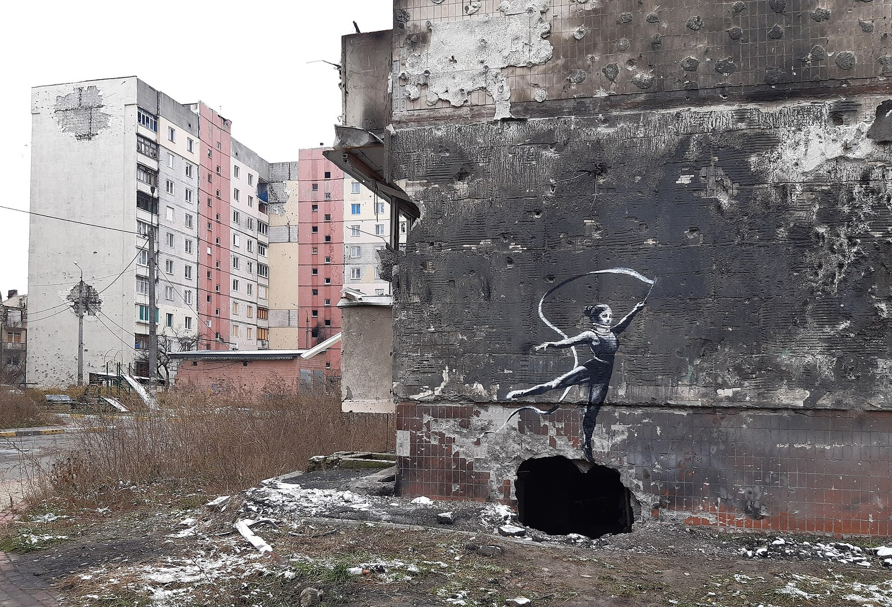
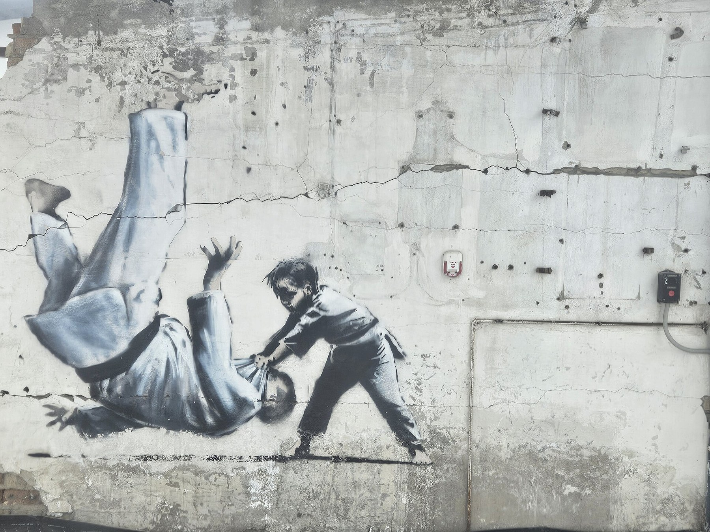
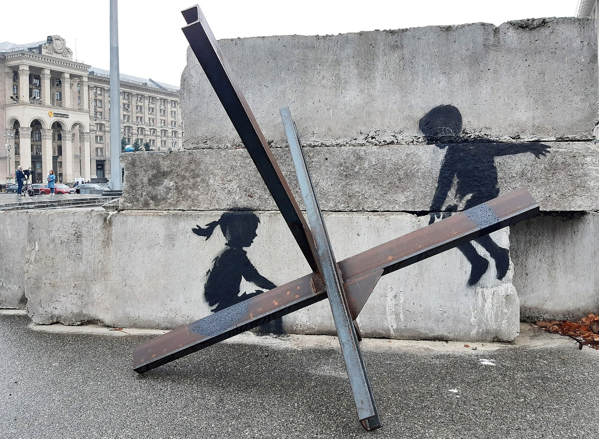
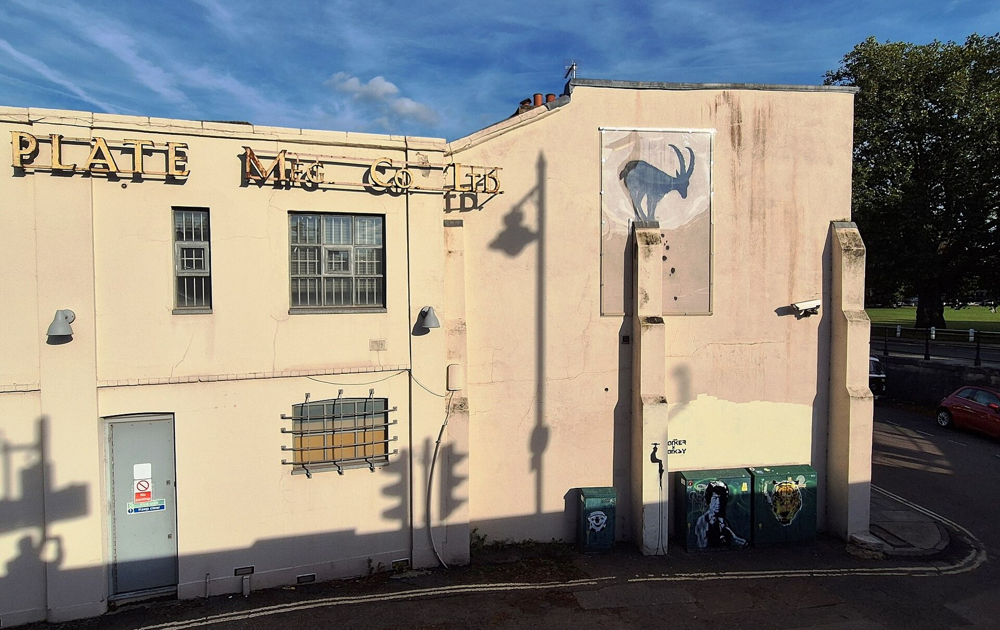
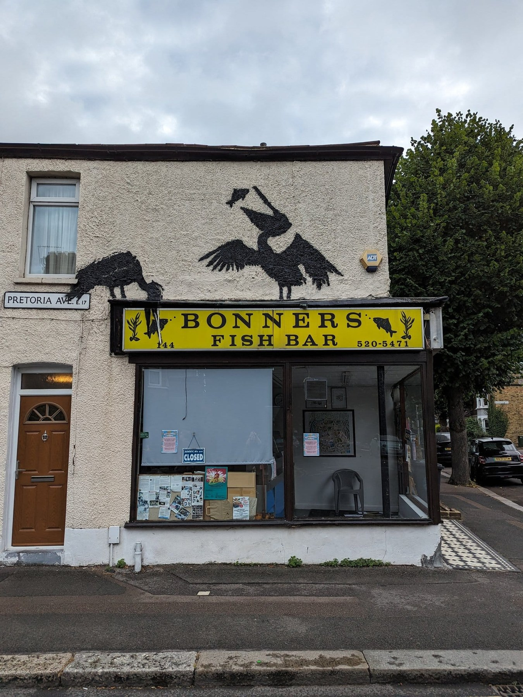
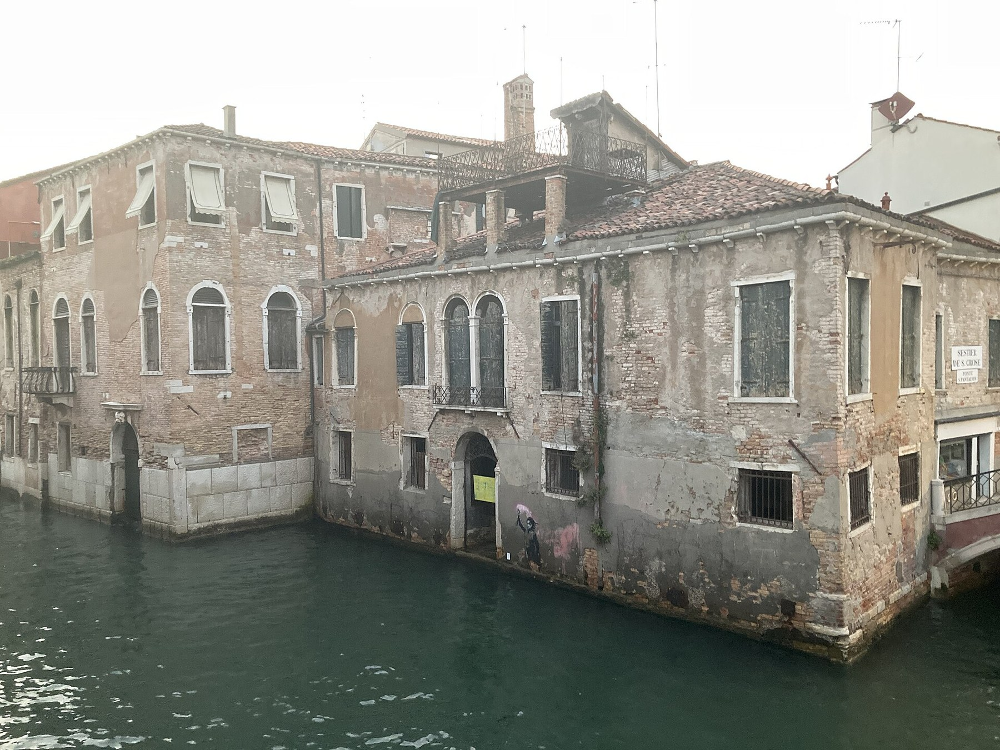

Anglais · Seconde bac pro · A2 and B1 · Lesson 5 of 6
Lesson 5. Does a mural lose its voice when it leaves its wall?
Question of the day: If the place is part of the slogan, what remains when the image moves?
For the teacher: timing (52 minutes)
| Time | Activity |
|---|---|
| 00 to 05 | Flashcard retrieval |
| 05 to 13 | Ukraine image study: the gymnast in place, then dismantled |
| 13 to 20 | Two more Ukrainian works, and a caution about interpretation |
| 20 to 27 | London animal works, 2024: goat and pelicans |
| 27 to 34 | Vocabulary, conditionals, and a short listening |
| 34 to 41 | Public-art committee |
| 41 to 44 | Flashcards |
| 44 to 49 | Written record and a recommendation |
| 49 to 52 | Exit statement and homework |
Checkpoint at minute 44. Every student explains at least one connection between an image and its site.
Eight-minute essential closing route (replaces the last eight minutes if the class needs more time; it does not add time): 44 to 46: finish If the mural is removed... 46 to 49: each student gives a recommendation. 49 to 51: record one benefit and one risk. 51 to 52: note homework.
A2 outcome
Explain a visible connection between an image and its surroundings.
B1 outcome
Compare conservation, public access and contextual meaning, and make a qualified recommendation.
Step 1 and 2. A gymnast on a ruined wall, in Irpin
In November 2022, several murals appeared in the Kyiv region. One of them, in Irpin, shows a rhythmic gymnast with a ribbon, as if she were balancing on a hole in a damaged building. This is not the handstand gymnast in Borodianka, a different mural, which Banksy posted on Instagram. The Irpin work is widely attributed to Banksy. Look at the mural in its original place: the gymnast, the hole, and the ruined building form one sentence. You already saw, in Lesson 3, what the wall looked like after it was cut.

The gymnast appears to balance on a hole in a ruined building: the hole is part of the sentence. In May 2023 the section of wall was dismantled, so that the image could be saved (you studied that photograph in Lesson 3). It was later moved to another site on the same street. Saving a work and taking it away from the hole that gave it meaning can be the same gesture, seen from two sides. If the place is part of the slogan, what does the slogan say after the move?
Exercise 1. Observation before interpretation. For each statement, write V (visible), I (interpretation) or N (cannot be established from the photographs alone).
- The gymnast is painted above a dark hole in the wall.
- The hole was made by a shell.
- The figure seems to balance as if the hole were a ball.
- The section of wall was later cut out.
- The people who removed it wanted to sell the work.
Corrigé
1 V. 2 N from the photograph alone (local and news reports describe a shell hole, but the image itself shows a hole, not its cause). Students may add: 'Reports say it was a shell hole,' which is an attributed claim. 3 I (a reading of the pose, a plausible one). 4 V, in the later photograph, and documented in reporting about May 2023. 5 N (intention is not shown; the stated aim in local reporting was to save the mural).
Step 3. Two more works from the same period


The judo mural first appeared in Borodianka. A child throws a much larger adult. Some viewers have identified the adult with a political leader. That reading must remain an interpretation: Banksy did not name the figure, and this sequence will not present the identification as a fact. The Kyiv photograph shows two children on a real anti-tank obstacle, used as a seesaw, on Independence Square. In both cases, the place is part of what the image says: the slogan cannot be reduced to a figure on a blank background.
Exercise 2. Match the work and the role of the site.
1. Gymnast in Irpin. 2. Pelicans in Walthamstow (next step). 3. Children in Kyiv. 4. Judo mural, first seen in Borodianka.
a. A military object becomes a piece of play. b. A hole in a ruined wall becomes a point of balance. c. A shop sign becomes part of the scene. d. A damaged place is the background for a smaller figure overcoming a larger one.
Corrigé
1b, 2c, 3a, 4d.
Step 4. London, August 2024: animals on ordinary walls
In August 2024, a series of animal murals appeared across London. The artist posted the works on the official Banksy Instagram, which is a public attribution of the series, not a civil identity. Two photographs are enough to see the point: the goat in Richmond stands on a real architectural ledge; the pelicans in Walthamstow interact with a real fish-and-chip shop sign. If you move only the painted animal, you lose the ledge, or you lose the sign.


A further example, in another city and another element: Migrant Child, painted in Venice in 2019 on a wall that rises from the water. This photograph was taken about three years later, when floods had already marked the work. The water, as in the Camden canal of Lesson 1, becomes part of what the image says.

Exercise 2b. Write the slogan, with the place inside the sentence. For the gymnast, for the pelicans, and for the child in Venice, write: what the image says, to whom, in what tone, and what the place adds. Then complete: If this work leaves its wall, the slogan will / may...
A2 pathway
Complete one card for each work: The image says... The place adds... If it is moved, it may...
B1 pathway
Write a short paragraph for each. Explain how placement is a visual device, not only a backdrop. Compare Venice (water marks the work) with Camden in Lesson 1 (water completes a written sentence).
Corrigé
Example answers. The gymnast may say: even on a ruined wall, a figure can still balance; the hole is the device, and the audience may be the town, or a wider public looking at a war. If the gymnast leaves the hole, the slogan is weaker, even if the painted figure is saved. The pelicans speak with a real fish-and-chip sign: if you move only the birds, you lose the sentence. The Venetian child stands on a wall above a canal; later floods mark the image, so time and water join the slogan. A comparison with the Camden canal is legitimate: in both cases, water is part of what is said. Other justified readings are possible.
Step 5. Expanding your vocabulary and grammar
| Word or phrase | Meaning | Example |
|---|---|---|
| site | the particular place where a work stands | The site is part of the meaning. |
| surroundings | what is around the work | The surroundings include rubble, a sign, or a ledge. |
| to conserve | to protect a work so that it lasts | The city may want to conserve the mural. |
| context | the situation that gives a work its meaning | If you remove the context, the image may say something else. |
| in order to | used to express a purpose | The wall was cut in order to save the painting. |
| because of | used to give a cause | The gymnast is striking because of the hole beneath her. |
| if + present, will / may | a possible future result | If the mural is removed, passers-by will no longer see it. |
| to relocate | to move something to a new place | The gymnast was later relocated on the same street. |
Grammar: first conditional. If the mural is removed, it may be safer. If it is removed, it will lose its hole, its ledge, or its shop sign. Purpose: in order to save it. Cause: because of the surroundings.
Exercise 3. Complete with if, will, may, because of, or in order to.
- _______ the pelicans are taken off the shop, they _______ lose the fish on the sign.
- The gymnast was cut out _______ protect her from demolition.
- The children are striking _______ the real metal obstacle they sit on.
- _______ the goat is sold as a cut-out, visitors _______ see a goat, but not a goat on that ledge.
Corrigé
1 If; will / may. 2 in order to. 3 because of. 4 If; may / will.
Exercise 4. Rewrite, keeping the same idea.
- People removed the mural. They wanted to save it. (in order to)
- The image is powerful. It stands on a ruined building. (because of)
- We take the goat away. We lose the ledge. (If...)
Corrigé
1 The mural was removed in order to save it. / People removed the mural in order to save it. 2 The image is powerful because of the ruined building. 3 If we take the goat away, we will (or may) lose the ledge.
Teacher-written listening (read twice)
A local committee is discussing a fictional mural on a privately owned warehouse. The image is a child looking at a closed shutter. Some members want to cut the shutter out and show it in a museum, in order to protect it from the rain and from theft. Other members say that if the shutter leaves the street, the work will lose the place it was made for. A third group suggests a photograph in the museum and a protective screen on the original wall. Nobody in the room has the right to invent a legal rule for every city. They must recommend, and they must give reasons.
A2 pathway
Note two options the committee discusses, and complete: If the mural is removed, it may... If it stays, it may...
B1 pathway
Restitute the three positions in connected sentences, then add your own recommendation, with in order to and a conditional.
Step 6. Public-art committee
Your class is the committee. The fictional warehouse mural can stay, move to a museum, or be photographed and protected in place. You must make a recommendation for Lesson 6's exhibition file.
A2 pathway
In pairs, 45 seconds each: give your recommendation with should and If... will / may. Then agree on one sentence to report to the class.
B1 pathway
In groups of three, three minutes: one student defends removal in order to conserve the work; one defends keeping it in place; one must propose a third way and write the group's final sentence. Use although, because of and a conditional.
Step 7. Written record and homework
A2 pathway
Complete: The gymnast is striking because of... If the mural is removed, it may... I think it should... in order to...
B1 pathway
Write a 100-word recommendation for the committee, comparing the Irpin gymnast (saved and moved) with the London pelicans (still tied to a shop sign). Keep interpretations and facts apart.
Homework. Choose one work from the sequence. Complete a full observation card: title or description, place, date, photographer, what you can see, what the place adds, what you cannot establish, and (B1) what would change if the work left its wall. Bring the card to Lesson 6. You will use it in the final task.